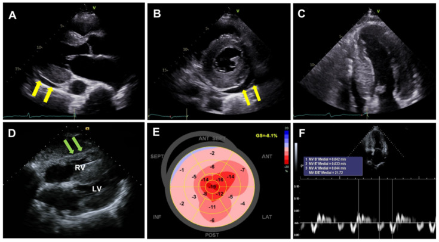

疾病 心臟
Restrictive cardiomyopathy ｜ 限制型心肌症 · Restrictive Cardiomyopathy 筆記更新 2026-07-26· 整理狀態：可用
加入閱讀清單 其他名稱 4 RCM · 限制型心肌症 · 限制性心肌病變 · Restrictive Cardiomyopathy
30 秒行動卡
診斷關鍵 ：雙側心衰竭表現 ＋ 心房明顯擴大、心室不大 ＋ 組織都卜勒 e′ ＜8 cm/s → 一定要回頭找病因（先想類澱粉）
治療骨架 ：治病因（類澱粉的 tafamidis／針對輕鏈的化療）＋ 小心地利尿；末期考慮心臟移植
絕對不可 ：在類澱粉心肌病變用 digoxin 或 CCB；也不要因為 EF 正常就當作「不嚴重」
定義與定位
項目
重點
本質
心肌順應性下降 → 舒張填充受限 ；心室腔不擴大 、壁厚正常或增厚、EF 常保持
特徵型態
心房顯著擴大、心室相對小 ——這個對比是超音波上的第一印象
分類位置
心肌症的第三型（對照擴張型、肥厚型 HCM ）；同時屬「舒張填充障礙」家族
病灶在哪
心肌 （對照：CP 在心包）
病因分類
類別
代表
浸潤性 類澱粉沉積症（最重要） 、類肉瘤病、Gaucher disease
貯積性 血鐵沉積症（hemochromatosis）、Fabry disease、肝醣貯積症
心內膜病變 心內膜心肌纖維化、Löffler 心內膜炎 （嗜酸性球增多）、類癌心臟病
治療相關 縱膈放射治療 、anthracycline 化療
特發性／家族性
肌小節或 desmin 基因突變
放射治療是唯一會同時造成 CP 與 RCM 的病因
所以縱膈放療病史不能 用來區分這兩個病，反而要兩個都想。
病因與機制
flowchart TD
A["浸潤 貯積<br/>或纖維化"] --> B["心肌僵硬<br/>順應性下降"]
B --> C["舒張填充受限<br/>填充壓上升"]
C --> D["心房長期高壓<br/>心房顯著擴大"]
C --> E["肺與體循環鬱血"]
D --> F["心房顫動與血栓"]
B --> G["組織都卜勒 e′ 下降"]
classDef key fill:#263238,stroke:#000,color:#fff,font-weight:bold
class G key
筆記中的流程與關係 臨床表現
典型 ：運動耐受不良、疲倦；左右心衰竭同時出現 （比 CP 更常見明顯的肺鬱血）提示性 ：心房顫動（心房大）、傳導阻滯（浸潤到傳導系統）、低血壓／姿勢性低血壓 少見但重要 ：類澱粉的心外線索 ——腕隧道症候群（常早於心臟症狀數年）、眶周瘀斑、巨舌、蛋白尿、周邊神經病變
→ 相關主訴流程：Edema 、Dyspnea
診斷
診斷條件
內容
超音波
心房大／心室小、壁厚正常或增厚、e′ ＜8 cm/s 、二尖瓣 E 波呼吸變異 ＜10% 、心肌顆粒閃爍狀 （類澱粉）
心導管
LVEDP 比 RVEDP 高 ＞5 mmHg ；RV 收縮壓常 ＞50 mmHg
心臟 MRI
瀰漫性心內膜下 LGE（類澱粉的典型型態）；T1 mapping／ECV 上升
病因確認
血清／尿液免疫固定電泳 ＋ 血清游離輕鏈（找 AL 型）；骨掃描示蹤劑（PYP／DPD）攝取（找 ATTR 型）；必要時心肌切片
要開的檢查 ：Echocardiography → Cardiac catheterization↗ （與 CP 難分時）
壁厚 + ECG 低電壓 = 類澱粉，直到證明不是
心肌明明變厚，心電圖電壓卻低 ——這個矛盾只有浸潤性疾病能解釋。
對照：HCM 是壁厚 + ECG 高電壓 。

類澱粉心肌病：A–C 可見室壁增厚、顆粒閃爍與少量心包積液（黃箭頭）；D 是右心室游離壁增厚（綠箭頭）；E 的 bull’s-eye 顯示 apical sparing。雙心房擴大要回到 apical four-chamber 一併確認。Source: Weber et al., Diagnostics 2022, Figure 2 （CC BY 4.0）。
鑑別診斷
治療
情境
處置
核心原則
治底層病因 ——RCM 本身沒有通用療法
ATTR 類澱粉
tafamidis 等穩定劑；早期治療效果較好
AL 類澱粉
針對漿細胞的化療／自體移植（由血液科主導）
血鐵沉積症
放血或鐵螯合劑
症狀控制
謹慎 利尿（心輸出量依賴前負荷，減太多會掉血壓）；控制心律、維持竇性節律
合併 Afib
抗凝——心房大且類澱粉本身易生血栓（見 DOAC ）
末期
心臟移植（AL 型須先控制原發病）
併發症與預後
要盯的併發症 ：Atrial fibrillation 與心房血栓、傳導阻滯與需要節律器、進行性心衰竭預後因子 ：病因決定一切 ——AL 型類澱粉未治療預後最差（以月計）；ATTR 型較慢；血鐵沉積症早期治療可逆
禁忌與陷阱
絕對不可
情境
絕對不可
為什麼
該做什麼
類澱粉心肌病變
給 digoxin
會與類澱粉纖維結合，容易中毒且易誘發心律不整
用其他方式控制心率，優先維持竇性節律
類澱粉心肌病變
給 CCB（verapamil、diltiazem）
同樣會結合並造成明顯低血壓
避免；心衰竭藥物也常因低血壓而無法耐受
任何 RCM
積極利尿至容積不足
心輸出量高度依賴前負荷
小劑量起、密切追蹤腎功能與血壓
診斷 RCM 後
停在「限制型心肌症」就結案
這是病生理描述不是最終診斷 ，病因決定治療與預後
一定要往下找病因，先排除類澱粉
常見錯誤
把 e′ ≥8 cm/s 記成 RCM——那是 CP ；RCM 是 ＜8 。
把 LVEDP − RVEDP ≤5 mmHg 記成 RCM——那是 CP ；RCM 是 ＞5 。
EF 正常就以為病情輕微——RCM 的問題在舒張，EF 幫不上忙。
忘記問腕隧道症候群病史——它常是類澱粉最早的線索。
相關連結
SOURCE & CONTEXT
來源與原始筆記 113-1 醫學(三) 6 延伸；Harrison's；ASE 2013 心包疾病影像指引
下載這篇 Markdown ↗ 網站保留原筆記的內容與整理狀態。